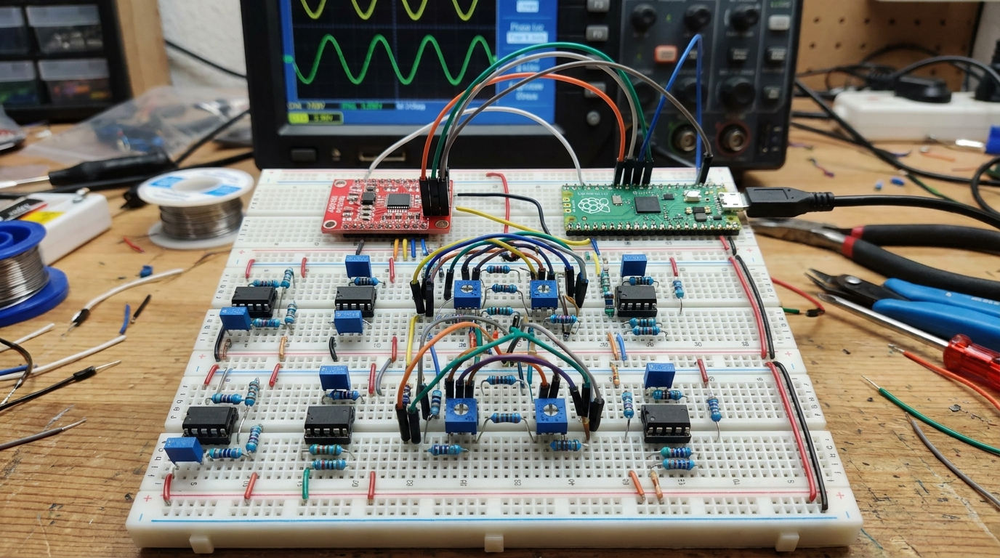
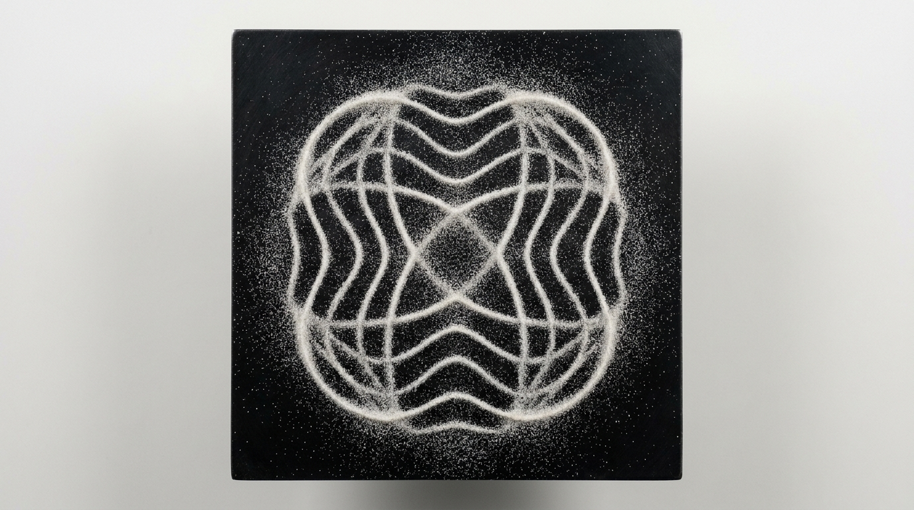
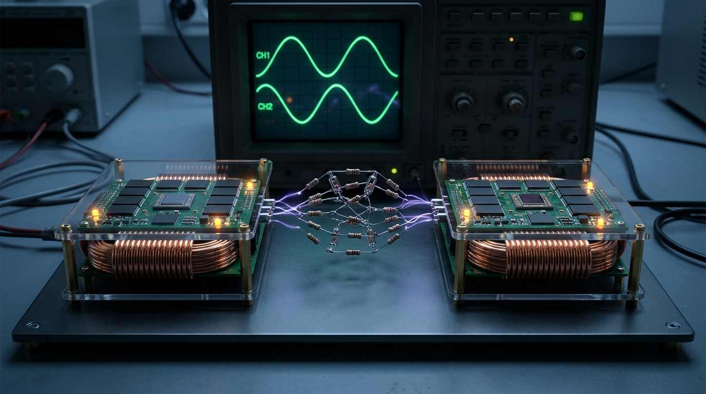
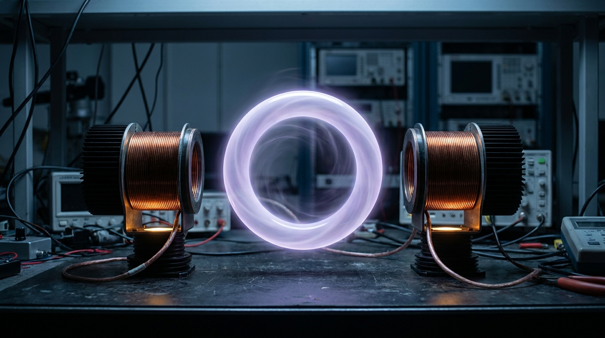

Computation, and honesty, in the space between.
Voice-written essays (the philosophy this is built on). Each tags
testable [T] claims and philosophy [P] claims.
The through-line: meaning and intelligence are relational; they arise in gaps and perpendicular axes; they can't be installed, only permitted. So the job is to prepare the soil and gate the hands — not to specify the sprout.
Run in software, on real data. These are simulations and mechanism illustrations — not hardware results, and not proof of the larger thesis. Honest scores shown.
Two phases lock together, one opposite (Ising spins ±1); a private signal reaches B only when the gap is open; sand settles onto the nodes. Honest scores: ~4.5 / ~4 / ~3 out of 10.
Oscillators whose phases lock to 0 or π (Ising spins ±1); the computation lives in the coupling between them. We benchmarked it on Max-Cut from n=12 to n=120.
Result: a genuine solver — it found 99.6–100% of the best-known cut at every size — but it ties simulated annealing (which edged it at n≥80), and its per-restart success collapses with scale. Honest limit: software simulation measures solution quality only; any real advantage would be energy-per-solution in physical hardware, which this cannot show.
Two reservoirs joined by a thin "gap." A private signal goes into A only; we reconstruct it from B alone. Recovery vs how far the gap is open:
Result: information crosses only when the gap is open (closed → R²≈0). With noise added, recovery climbs gradually — and a pre-registered prediction about the curve's shape scored ~4/5 against the run. Honest limit: this is inter-reservoir information transfer through a channel. It is not telepathy; high recovery at strong coupling is partly trivial synchronization.
The core product. Lock a prediction (+ its scoring rule and regime) into a hash before the outcome; you can't move the goalposts afterward. Over many predictions you get a real reliability curve. Left: calibration (accuracy on the line). Right: a second, perpendicular axis — resolvability (can a third party even check it?).
ledger: 5 resolved · Brier 0.15 · skill +0.41 · auto-rebuilt 2026-06-15T12:55:02+00:00 (UTC)
Why it matters: a claim can be supremely confident and still uncheckable. Those aren't miscalibrated — they're off the plane entirely. The ledger auto-flags them (a high-conviction "we will achieve the singularity" scores 0.30 and is refused), so the honesty floor is enforced in code, not in good intentions.
From essay No.1: instruction-free recombination over the corpus, no objective, surfacing surprising junctions for review — the "undirected interval," made runnable. One round paired concepts at random; most were noise, and the gate kept the few that were surprising and valid. The standout (a random pairing of "calibration × perpendicular") became Experiment 3's resolvability axis — an idea that arrived unaimed, then was checked and built.
Honest limit: one round (n=1) is a demonstration of the mechanism, not evidence. Whether it beats directed brainstorming is a separate, pre-registered, unrun test.
The same lineage everyone is racing down — taken one step further.
1 · Today — CPU + GPU. Processor and memory are separate; a stored program is fetched and executed over numbers; most of the energy goes to moving data.
2 · The "we don't need GPUs" wave (2024–26). Matmul-free models, in-memory / analog, neuromorphic, thermodynamic — all attack the same paradigm's costs, but still execute designed operations.
3 · Prepende. No stored program, no trained internal weights — a self-sustaining presence in the coupling is the computation; you only read a thin linear layer off the top.
The one-sentence difference: everyone else makes the matrix-math cheaper or closer to memory. We don't do the matrix-math at all.
The standard AGI debate runs along one line: install more rules until intelligence appears, or remove all constraint until it unfolds. Our series argues both fail the same way — they lose the contrast that generates depth. The suggestion is a third posture: prepare the conditions, gate the actions, and leave the cognition free — then look for what arises.
What it might solve (hypotheses, labeled):
[T] Move the safety budget to the action boundary (gate the hands)
and a lightly-tuned model can match a heavily-tuned one on safety while being more
novel. — testable; not yet run.[T] An undirected "night cycle" surfaces more novel-and-valid
connections than directed brainstorming. — testable; not yet run.[P] Computation can live in the coupling/gap between systems rather
than in the nodes. — a real research lineage (reservoir computing); the prepende framing is unproven.[P] "Prependic" — an axis orthogonal to the optimization loop.
— philosophy / open frontier, by its author's own admission.Honestly: we think the word is being used too broadly — that's our own series' position (Mass Awakening). The two common pictures — machines surpass us, or everything merges into one — are both the same line, just read from opposite ends. The Prependic essay's reframe is that the interesting direction is perpendicular to that line: not a better ending, but intelligence oriented across the whole frame of optimizing toward a goal.
So when we say "singularity," we mean an open question, not an event we are announcing. We do not claim it is near, achievable on a schedule, or that this work produces it. A claim like "we will achieve the singularity" is, by our own tool's measure, unresolvable — no checkable criterion, no timeframe — so it is flagged and kept out of the ledger. The honest version is a hypothesis with no number on it, and that absence is the point.
A dated log of every run — what we tried, the real result, and what it does (and does not) show. To keep this page short, full entries live in the logbook; only the latest is summarized here.
The oscillator Ising machine ties simulated annealing on cut quality to n=120, but its exact-optimum per-restart hit-rate collapses with size (91.7% → 0%), and in software it is slower than SA — so the energy case stays a hardware question, not a result. The gap-coupled reservoir [T2] was pre-registered at p=0.45 and resolved a clean miss (gap R² 0.27 vs a single reservoir's 0.96 at matched readout). Full detail and the [T1] hardware estimate → the logbook.
Illustrations of what the ideas might look like as hardware — concept renders, not photographs of working devices. They help you picture it; they prove nothing.




What we explicitly do not claim:
If a claim here can't be checked by a stranger, it's labeled a question. That discipline is the whole product.